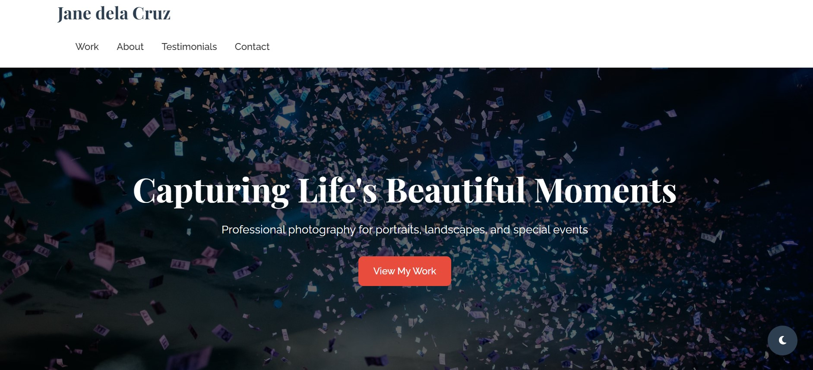
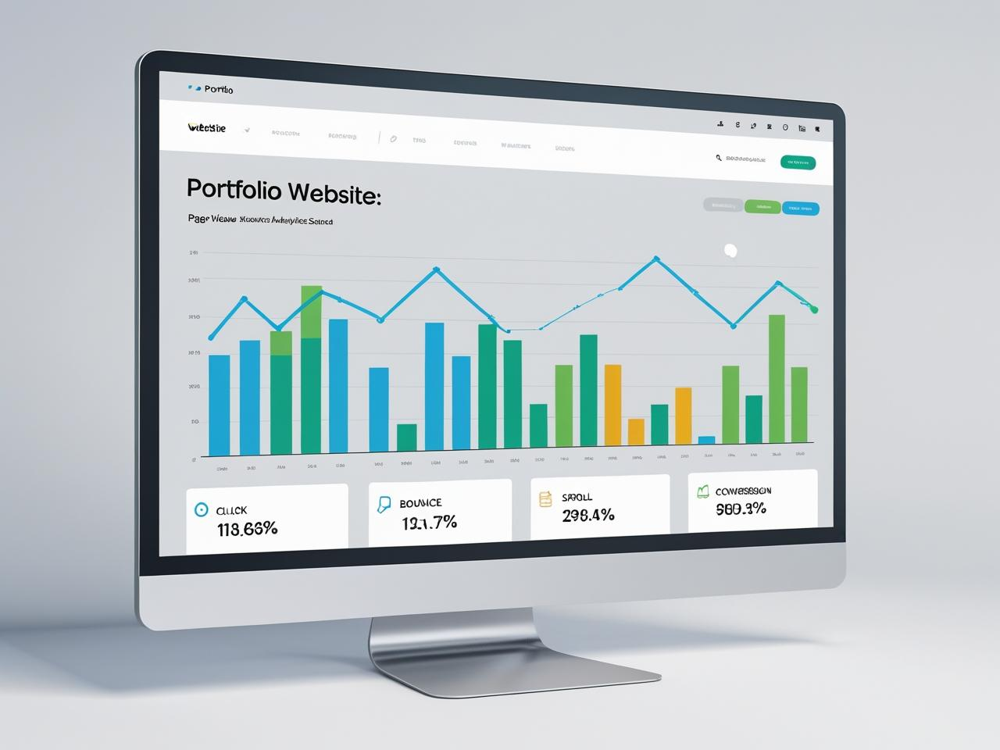
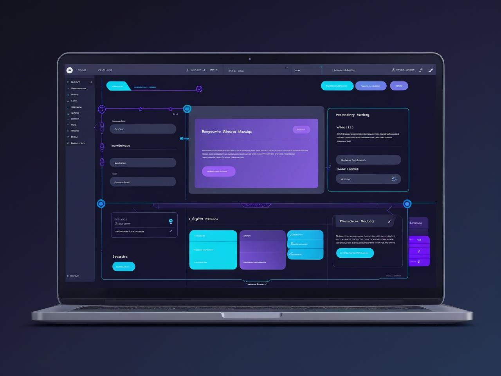

A portfolio isn’t just a launchpad—it’s a living system. Whether you're evolving your personal brand or responding to fast-shifting audience preferences, continuous care makes the difference between a static resume and a dynamic showcase. Here's how to keep your portfolio sharp and measurable.
📅 Keeping Your Portfolio Up-to-Date
Outdated portfolios don’t reflect growth—and that’s a missed opportunity. Regular updates don’t have to be exhausting. They just need to be strategic.
🛠️ Tactics to Keep It Fresh:
- Set a maintenance cadence: Add it to your calendar—monthly or quarterly check-ins to revise copy, refresh visuals, or add new wins.
- Build modular, JSON-editable sections: Your offline-first system makes updates frictionless. Lean on those editable fields to swap in new content fast.
- Highlight evolving strengths: Just delivered a complex, multi-touch campaign or unlocked better browser handling? Showcase it.
- Swap outdated projects: Replace work that no longer reflects your level. No need to hide early pieces—just reposition them as part of your growth arc.
- Update your About page with intention: Have your goals or passions shifted? Let your digital “voice” evolve with you.

📊 Measuring Portfolio Success
If you’re not tracking, you’re guessing. Smart metrics help you understand which sections work—and which need more soul.
🔍 Metrics That Matter:
- Traffic and Click Behaviors: Use analytics tools to track page views, bounce rates, and time on page. Insight: If visitors spend more time on your UX showcase than your marketing campaigns, lean into that strength—or improve storytelling for the other.
- Engagement Patterns: Are users downloading templates? Sharing sample projects? Interacting with offline-editable demos? Every action is a signal.
- Conversion Goals: Define what success looks like: Email inquiries, newsletter signups, freelance leads. Then watch the funnel.
- Heatmaps or User Flow Reports: For deeper UX intel, tools like Hotjar or Fathom (if privacy matters) can show where users click, scroll, and stall.
- Feedback Loops: Include a soft CTA like “Was this helpful?” or invite collaborators to comment. Real human input > algorithms alone.

⚙️ Tip for Tech-Led Portfolio Pros
If you're running local previews or JSON-driven systems, integrate lightweight usage tracking—even if it's offline. You can log event-based interactions (like “preview clicked” or “section expanded”) and sync when back online. It’s user-empowered data for intentional growth.
Your portfolio shouldn’t just be up-to-date—it should be insightful, adaptive, and aligned with what you’re trying to achieve. Think of it as your most honest mirror and most persuasive partner.
